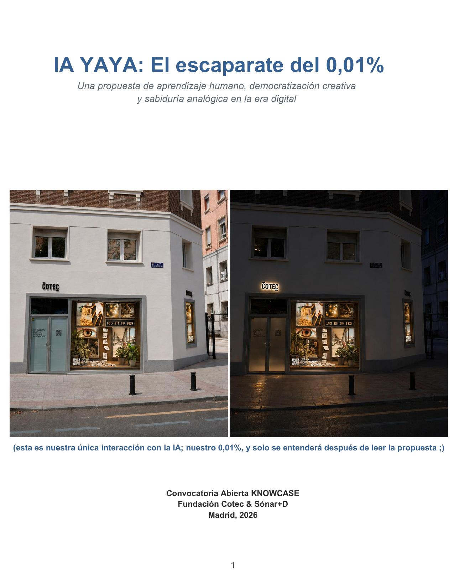

“Lo que aprendí de mi abuela no estaba escrito en ningún libro.”
0,01% / memoria

IA YAYA: El escaparate del 0,01% es una instalación interactiva pensada de forma nativa para el espacio KNOWCASE de la Fundación Cotec en Madrid. Mientras los sistemas automáticos controlan el 99,9% de los datos urbanos fríos, el valor transformador de nuestra sociedad sigue residiendo en ese 0,01% puramente humano que guarda los afectos, la intuición y nuestros inolvidables recuerdos como el “nudo de la abuela”.
La propuesta coge la tecnología más compleja —la IA— y la deforma mediante la empatía de un niño pequeño para convertirla en algo cercano, tierno y accesible. Un peatón de Chamberí puede entenderla al instante: escanear, escribir un recuerdo o idea corta y ver cómo una máquina lo imprime tras el cristal en tiempo real.
La inteligencia colectiva late en la calle: el objetivo operativo es alcanzar 685 co-creadores diarios. Los incentivos previstos incluyen el Sello de Innovador IA YAYA, mentoría, co-creación, vídeos de 1 minuto y una Gala Cotec. En dos años: 104 ganadores semanales, 24 mensuales y 2 anuales.
El proyecto se plantea con protección de datos desde el diseño, eficiencia energética e infraestructura circular, 100% desmontable y reutilizable, preparada para extenderse de forma segura hasta 36 meses.
Pantallas, plantas vivas, tiestos de arcilla, madera, impresora térmica y personas forman un único ecosistema. Dentro de él, la Biblioteca de Recuerdos integra las montañas de microtiques que deja la participación.


Un rostro de los empleos del futuro integrado en lo cotidiano: cuida, filtra y clasifica los saberes colectivos que llegan a la Biblioteca.
IA YAYA pone en valor ese pequeño porcentaje humano hecho de intuición, saberes intergeneracionales, afectos, oficios del cuidado y recuerdos compartidos.
Usamos la inteligencia artificial para proteger y rescatar los saberes analógicos, no para eliminar el factor humano.
Un escaparate de Chamberí se convierte en un lugar para frenar el ritmo, respirar y recordar. La tecnología más puntera se disfraza de empatía y nostalgia cotidiana.

IA YAYA juega con IAIA → YAYA: una forma cariñosa de decir abuela y, al mismo tiempo, el nombre de ese 0,01% incontable. El “nudo de la abuela” representa los recuerdos y saberes que ninguna máquina sabe replicar.
¿Tu idea puede cambiar el mundo hoy? Rétanos en 30 segundos.

Cuando alguien participa, la impresora térmica emite el texto en tiempo real. El microtique cae tras el cristal y se suma físicamente a la Biblioteca de Recuerdos.
La Biblioteca está concebida para crecer y poder reutilizarse como exposición itinerante y como base para futuros informes de Cotec.
IA YAYA: El escaparate del 0,01% es una instalación urbana e interactiva pensada de forma nativa para el espacio KNOWCASE de la Fundación Cotec en Madrid. Cruza ciencia de datos, arte visual, tecnología e impacto social para convertir al ciudadano en parte activa de la obra.